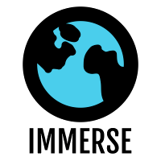

<nav class="navbar sticky-top navbar-expand-lg navbar-light bg-info">

    <!-- go back button -->
    <button type="button" formaction="#" class="btn btn-primary nav-btn" id="goBackButton" onclick="go_back()">
        <i class="bi bi-arrow-left" style="font-size: 1.7rem;"></i>
    </button>

    <!-- display the app logo, and direct to main.html when pressed -->
    <button type="button" class="btn btn-primary nav-btn" onclick="logo_button()">
        
    </button>

    <!-- JavaScript functions -->
    <script src="../scripts/topnav.js"></script>
</nav>